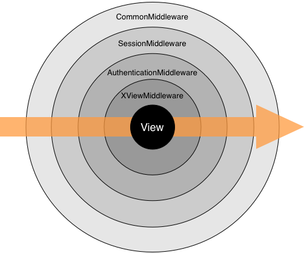

| revision-up-to: | 8961 (1.0) |
|---|
ミドルウェア (Middleware) とは、 Django のリクエスト/レスポンス処理をフック するためのフレームワークです。ミドルウェアは軽量かつ低水準な「プラグイン」 システムで、Django の入出力を操作します。
各ミドルウェアコンポーネントはそれぞれ特定の機能を担っています。例えば、 Django には XViewMiddleware ミドルウェアコンポーネントがありますが、こ れは全ての HEAD リクエストに対して "X-View" HTTP ヘッダを追加します。
このドキュメントでは、 Django についてくる全てのミドルウェアコンポーネント の使用法と、自分で新たにミドルウェアを作る方法を説明します。
Django には、すぐに使える組み込みのミドルウェアが付属しています。 組み込みミドルウェアガイド を参照してください。
ミドルウェアコンポーネントを有効化するには、Django 設定ファイルの MIDDLEWARE_CLASSES リストにコンポーネントを追加します。コンポー ネント名は文字列で指定し、ミドルウェアのクラス名を完全な Python パスで表し ます。例えば、 django-admin.py startproject が生 成するデフォルトの設定ファイルにある MIDDLEWARE_CLASSES は以下の ようになっています:
MIDDLEWARE_CLASSES = (
'django.middleware.common.CommonMiddleware',
'django.contrib.sessions.middleware.SessionMiddleware',
'django.contrib.auth.middleware.AuthenticationMiddleware',
'django.middleware.doc.XViewMiddleware',
)
リクエストの処理フェーズでは、Django は MIDDLEWARE_CLASSES に指定された順番で (process_request() および process_view`()) ミドルウェアを適用していきます。レスポンスの処理フェーズでは、 (process_response() および process_exception() ) ミドルウェア が逆順に適用されます。この仕組みは、タマネギの構造になぞらえて、ミドルウェ アクラスを「層」だと考えるとよいでしょう:
Django はミドルウェアがなくても動作します -- 望むなら MIDDLEWARE_CLASSES は空でもよいのです。とはいえ、少なくとも CommonMiddleware は使うように強く勧めます。
ミドルウェアの自作は簡単です。各ミドルウェアコンポーネントは、以下のメソッ ドを少なくとも一つ定義しているような単一の Python クラスです:
request は HttpRequest オブジェクトです。このメソッ ドはリクエストごとに Django がどのビューを実行するか決定する前に呼び出されます。
process_request() は None または HttpResponse オブジェクトのいずれかを返さねばなりません。 None を返した場合、 Django はリクエストの処理を継続し、他のミドルウェアや適切なビューを実行します。 HttpResponse オブジェクトを返した場合、 Django は他の リクエストミドルウェア、ビューミドルウェア、例外ミドルウェア、あるいは URLconf で設定されたビューを呼び出さず、 HttpResponse オブジェクトをそのまま返します。レスポンスミドルウェアは必ず呼び出されます。
request は HttpRequest オブジェクトです。 view_func は Django がビュー関数としてこれから呼び出そうとしている Python の関数です、 (実際の関数オブジェクトで、関数名を表す文字列ではありま せん)。 view_args にはビューに渡されることになる固定引数が、 view_kwargs にはビューに渡されることになるキーワード引数の辞書が入って います。 view_args と``view_kwargs`` のいずれにも、ビューの第一引数 (request) は入っていません。
process_view() は Django がビュー関数を呼び出す直前に呼び出されます。こ の関数は None または HttpResponse オブジェクトを 返さねばなりません。 None を返した場合、 Django は処理を継続し、他のミ ドルウェアの process_view() を試した後、適切なビュー関数を呼び出します。 HttpResponse オブジェクトを返した場合、 Django は他の リクエストミドルウェア、ビューミドルウェア、例外ミドルウェア、あるいは URLconf で設定されたビューを呼び出さず、 HttpResponse オブジェクトをそのまま返します。レスポンスミドルウェアは必ず呼び出されます。
request は HttpRequest オブジェクトです。 response は Django のビュー関数の返す HttpResponse オブジェクトです。
process_response() は HttpResponse オブジェクトを 返さねばなりません。渡された response オブジェクトを変更して返しても、 新たに HttpResponse オブジェクトを生成して返してもか まいません。
request は HttpRequest オブジェクトです。 exception はビュー関数の送出した Exception オブジェクトです。
Django はビューが例外を送出した際に process_exception() を呼び出します。 process_exception() は None または HttpResponse オブジェクトのいずれかを返さねばなりませ ん。 HttpResponse オブジェクトを返した場合、その応答 をそのままブラウザに返します。それ以外の場合、デフォルトの例外処理を起動し ます。
ほとんどのミドルウェアクラスは、実質的に単なる process_* メソッドの置き 場でしかないので、初期化メソッドは必要ありません。ミドルウェアのグローバル な状態を保存するのに __init__ メソッドを使ってもかまいませんが、以下の 点に注意してください:
ミドルウェアを使うかどうかを実行時に決められると便利なことがあります。ミド ルウェアの __init__ メソッドで django.core.exceptions.MiddlewareNotUsed を送出すると、 Django はそ のミドルウェアを処理から外します。
Aug 31, 2012